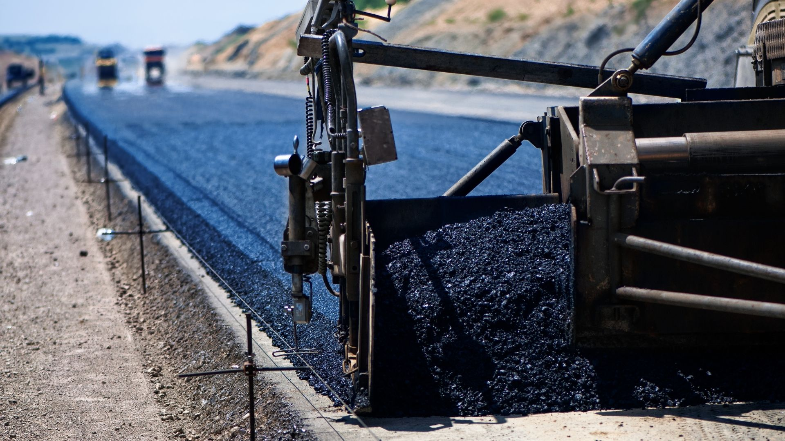

Common Mistakes Buyers Make When Importing Bitumen
Even experienced buyers can encounter costly delays, quality issues, and unexpected expenses when critical steps are overlooked during procurement and logistics planning. Careful planning, supplier verification, and coordinated shipment management are essential to reduce risk and ensure a smoother, more cost-effective purchasing process.
Ignoring Quality Verification
Relying on price alone without independent inspection can lead to off-spec material.
Unclear Packaging Specifications
Packaging affects handling, storage, and unloading. Buyers must align packaging with destination infrastructure.
Underestimating Logistics Complexity
Port congestion, vessel availability, and customs procedures all affect delivery timelines.
Avoiding these mistakes protects your budget, timeline, and project reputation.
